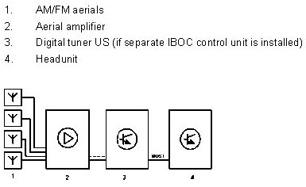

Functional Description Of The Digital Tuner US
Functional Description Of The Digital Tuner US
Customer benefit of the DAB tuner
IBOC is a digital AM/FM radio in the USA. It used additional digital signals to enhance FM/AM.
Enhancement of FM by means of additional digital signals
- Sound quality close to CD/MD
- Additional data services (singer, song title, album name)
- Reduction in multiple reception
Enhancement of AM by means of additional digital signals
- Sound quality close to FM
- Minimization of interference
- Additional data services (singer, song title, album name)
- Reduction in multiple reception
Functions of the DAB tuner
- Analog AM/FM reception
- Digital reception of additional signals within the AM/FM frequency range
- Autostore function
- Automatic station search, upwards and downwards
- Search for special stations
- Personalization of the IBOC
Personalization of the DAB tuner
The settings of the tuner can be personalized via the ignition key. The following settings can be stored as personalized:
- 12 FM stations
- 12 AM stations
- The last AM & FM stations listened to
- IBOC text On/Off
- RBDS text On/Off
Technical information on the IBOC tuner
The most important information on the IBOC tuner:
- Frequency FM: 87.7 MHz - 107.9 MHz (0.2 MHz increment)
- Frequency AM: 530 KHz - 1710 KHz (10 KHz increment)
- Permitted voltage range (9-16 V)
- The 4 FM aerials of the analog tuner are used (if separate IBOC control unit is installed).
- The best aerial is selected by the aerial diversity and made available to the DAB tuner
IBOC system network
The graphic shows the receiver with the digital tuner US.

Integration of the DAB tuner function in the headunit
In the current headunits (radio/Car Information Computer/multimedia platform), the digital radio function is being integrated little by little. In this case, the AM/FM aerial line from the aerial diversity is connected to the headunit despite the DAB tuner function.